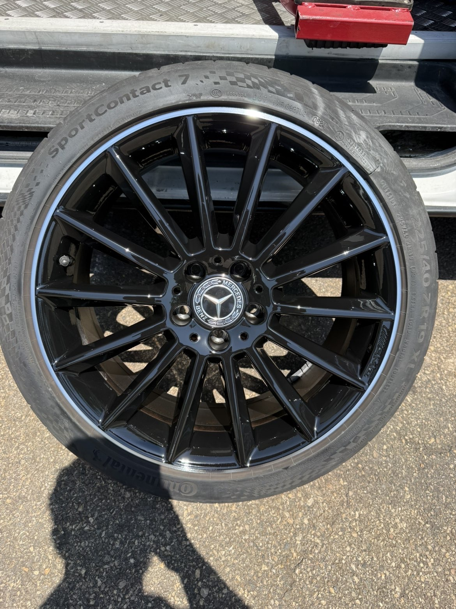
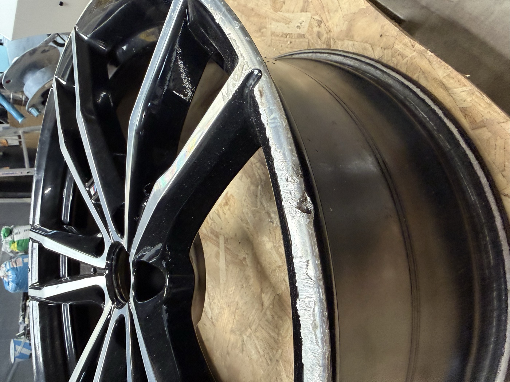
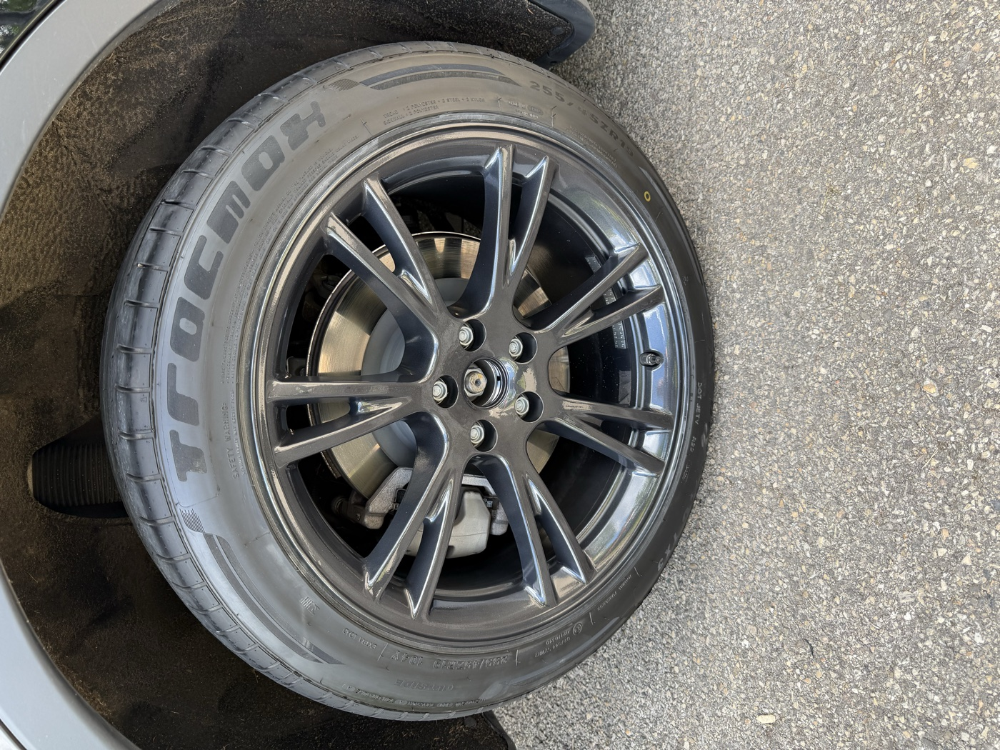
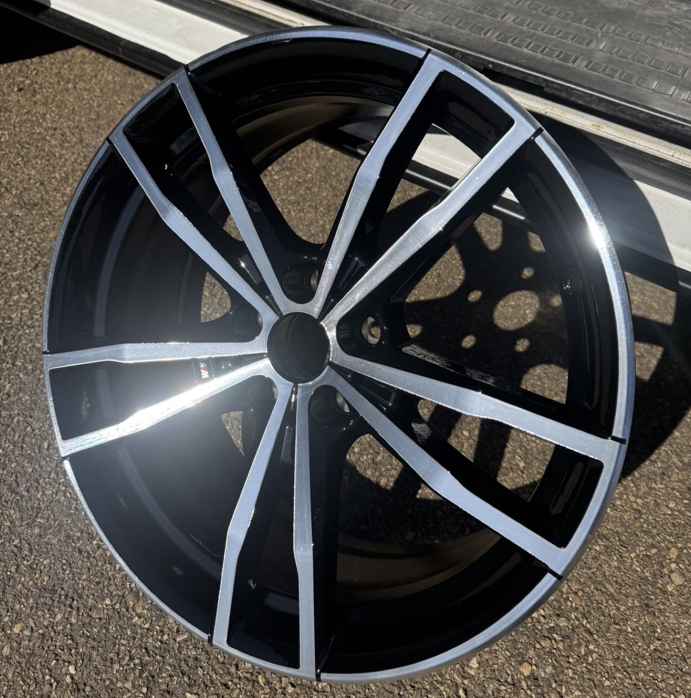
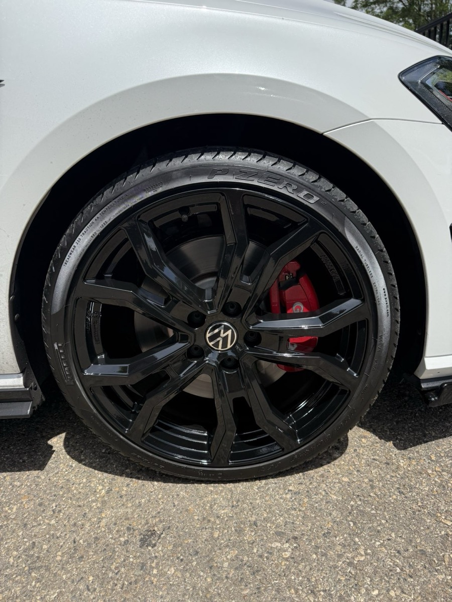
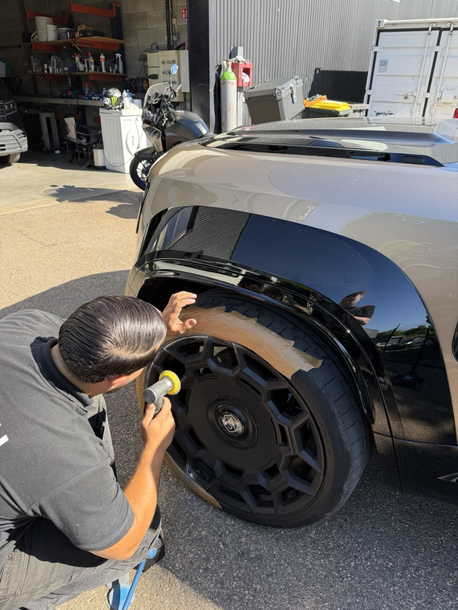
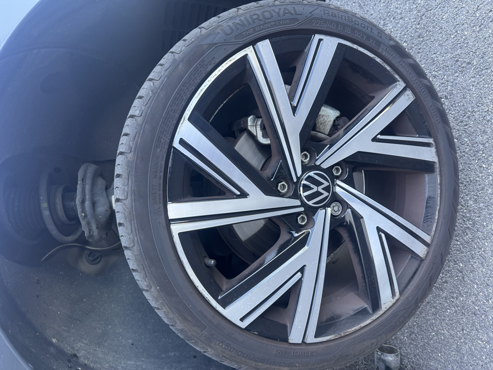
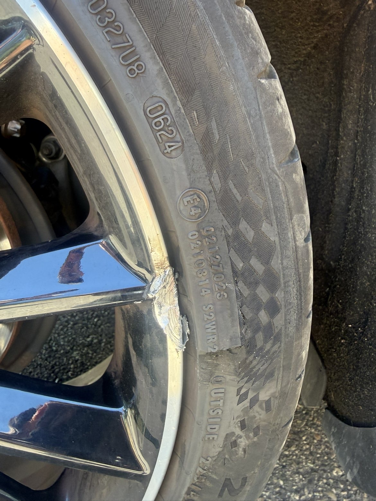

Rénovation de jantes à Lyon : redonnez une seconde vie à vos jantes
Service mobile à domicile, sans démontage des pneus possible. Résultat professionnel sous 24-48h dans tout le Rhône, l'Isère et la Loire.
LireREYNOV
Guides pratiques, conseils d'entretien et actualités rénovation de jantes par les spécialistes REYNOV à Lyon.

À la une · 1er juillet 2026
Le concessionnaire demande 650€ pour une jante neuve. REYNOV la reconditionne entièrement : rechargement de matière, peinture bi-composant teinte d'origine au spectrophotomètre. Résultat indiscernable du neuf — cas réel en 3 photos.
Lire l'articleTous les articles
Service mobile à domicile, sans démontage des pneus possible. Résultat professionnel sous 24-48h dans tout le Rhône, l'Isère et la Loire.
Lire
Série 5, X5, M3 — finitions diamantées, bi-ton, noir brillant. Tout savoir sur la rénovation des jantes BMW à domicile.
Lire
Cayenne, Macan, 911, Panamera — finitions d'origine respectées. Argent satiné, bi-ton, RS Spyder, noir brillant. Service mobile Monts d'Or.
Lire
Model 3, Y, S, X — Gemini, Überturbine, Arachnid, Induction. Toutes finitions Tesla réparées à domicile. LOA Tesla Finance préparé avant restitution.
Lire
Jantes 22 pouces M Sport bi-color sur BMW XM — finition restituée à l'identique. Le résultat d'une intervention réelle REYNOV.
Lire
Le client pensait devoir racheter une jante neuve à 500€. On l'a rénovée pour 169€ TTC — résultat invisible. Voici comment.
Lire
Intervention J+1 sur jantes Defender abîmées. Retouche localisée, résultat invisible — comment on gère les urgences chez REYNOV.
Lire
Photos et vidéo d'une vraie intervention REYNOV à Saint-Didier, Champagne, Limonest. Atelier mobile, résultat professionnel chez vous.
Lire
Photos et vidéo d'une intervention réelle. REYNOV se déplace chez vous sur tout le Grand Lyon — Lyon, Jonage, Bron, Villeurbanne, Meyzieu.
Lire
Combien rapporte vraiment une rénovation de jantes avant de vendre ? ROI chiffré, cas concrets BMW / Porsche / Audi, conseils marchands VO.
Lire
LOA ou LLD à Dardilly, Limonest, Écully ? Tout ce qu'il faut faire avant la restitution pour éviter les frais sur les jantes.
Lire
Types de rayures, risques, solutions et coûts. Tout ce qu'il faut savoir avant d'agir.
Lire
Vibrations au volant, usure inégale des pneus ? Identifiez les symptômes et les solutions.
Lire
Les pénalités du loueur coûtent cher. Découvrez comment préparer vos jantes avant la restitution.
LireFourchettes de prix, facteurs qui influencent le tarif et comparaison avec le remplacement.
Lire
Quand la soudure TIG suffit et quand il vaut mieux remplacer. Le guide complet.
Lire
Oxydation, écaillage, rayures sur jante aluminium ? Décapage, traitement anticorrosion, peinture bi-composant — le processus complet expliqué.
Lire
Pénalités leasing vs réparation : comparatif des coûts, délais d'intervention et conseils pour rendre votre véhicule sans mauvaise surprise.
Lire
Combien coûte la réparation d'une jante rayée, une soudure ou un dévoilage à Lyon ? Tous les tarifs réels REYNOV avec devis gratuit sous 24h.
Lire
Frottement de trottoir, impact de parking… Découvrez les étapes de réparation d'une jante rayée par REYNOV, résultat garanti comme neuf.
Lire